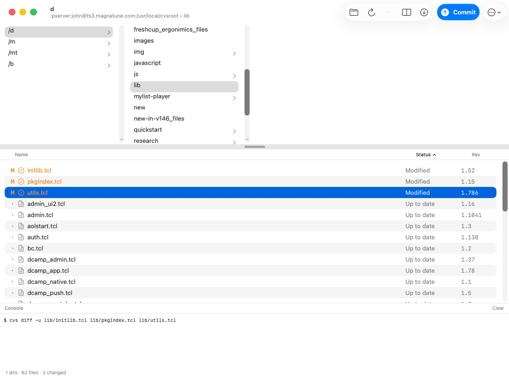
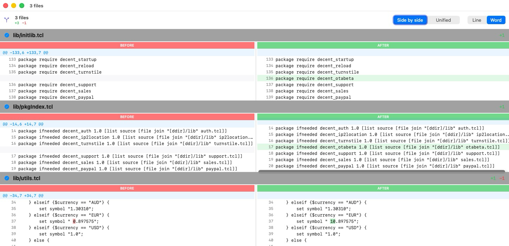

What it is
MacCVS is a native macOS client for CVS, written in SwiftUI. It is a replacement for the original Carbon-based cvsgui MacCVS, which no longer runs on current macOS. It provides a file browser with per-file CVS status and revision, a side-by-side / unified diff viewer, and commit.
Screenshots


Repository
Source: github.com/johnbuckman/MacCVS.